Simulateur de lancer de dés
 Perte
Perte
 Perte
Perte
 Dé d’échec
Dé d’échec
| Dé d’action | Score | Succès |
|---|---|---|
| - | - | - |
Vous devez obtenir un nombre de succès au moins égal à la difficulté de l’acte pour le réussir et éviter l’échec personnel.
Résultats
0 sur le dé de perte
Vous perdez 1 succès sur votre Test (déjà calculé ci-dessus).
Perte d’énergie
Le dé de perte vous fait perdre 0 énergie(s) au choix (sauf aléa).
(+1 pour chaque personnage qui ne participe pas à cet acte.)
Symbiose nécrotique !
Vous êtes victime d’un échec personnel. Et un autre personnage devra obtenir 1 succès supplémentaire pendant cet acte..
En mode solo, vous devrez obtenir un succès supplémentaire au prochain acte. S’il s’agissait du dernier acte, l’adversité gagne 1 acte.
Symbiose nécrotique transcendantale !
Vos 4 énergies sont à 0. L’adversité en cours est augmentée d’ 1 acte.
Symbiose transcendantale !
Vos 4 énergies sont en symbiose. L’adversité en cours est réduite d’ 1 acte.
Symbiose !
Vos 3 énergies sont en symbiose. Vous ignorez le dé de perte. Et vous réussissez cet acte avec 5 succès.
0, le chiffre des limbes !
Vous avez obtenu un 0 à votre dé d'action. Rassurez-vous, il est toujours possible de puiser dans une autre énergie.
Bonus possible !
Vous avez obtenu un 9 à un de vos dés ! Il est possible de puiser dans cette énergie pour obtenir un Succès supplémentaire !
Succès bonus !
Vous avez obtenu un 9 à votre dé d’action, vous gagnez un Succès supplémentaire !
Apprentissage
On apprend de ses réussites et de ses échecs. La symbiose vous permet d’augmenter de +1 le niveau du domaine utilisé pour réaliser cette action. (1 seule fois / joueur / séance)
Succès critique !
Le 0 obtenu sur le dé noir vous offre un bonus de +10 au score, ainsi qu’un bonus narratif !
Relance possible
Si la valeur du dé noir ne vous convient pas, vous pouvez le relancer au prix d’un point d’énergie au choix.
Félicitation !
Vous avez obtenu un nombre de succès au moins égal à la difficulté.
Cet acte est donc réussi. Qu'en sera-t-il du suivant ?
Insuffisant
Votre Score n'est pas suffisant.
Vous pouvez utiliser un dé d'une autre couleur pour l'améliorer, mais dans ce cas vous perdrez un point dans l'énergie correspondante. La valeur de ce dé s'ajoute à votre Score.
En cas d’échec
Si le test est un échec, vous subissez un échec personnel aléatoire.
Lorsqu'une de vos énergies arrive à zéro, décochez la case sous le dé associé pour le désactiver.

 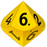
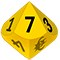
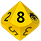
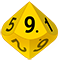
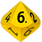
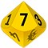
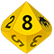
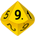


 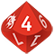
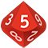
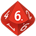
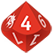
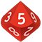
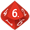
 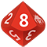
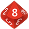


 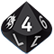
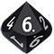
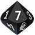
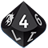
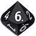
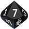